The determinant of a matrix is equal to the oriented volume of the shape spanned by its column vectors. Volume determines the magnitude of the determinant, while orientation determines its sign. The purpose of this site is to help students build a geometric intuition for the determinant. Formal proofs and general methods for calculating the determinant of any \(n \times n\) matrix are omitted, but students can find them by following the links provided.
Let's start in 2 dimensions. Consider the matrix below.
Volume
Each column of the matrix represents a vector in two-dimensional space. These vectors originate at the origin and point to specific coordinates in the plane. The first row of each vector gives its x-coordinate, and the second row gives its y-coordinate.
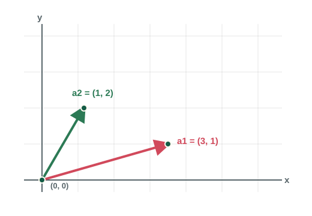
If we slide \(a_1\) so that it starts at the tip of \(a_2\), we get a new vector \(a_1 + a_2\). Connecting the origin, \(a_1\), \(a_2\), and \(a_1 + a_2\) forms a parallelogram. This parallelogram has some area \(V(a_1, a_2)\).
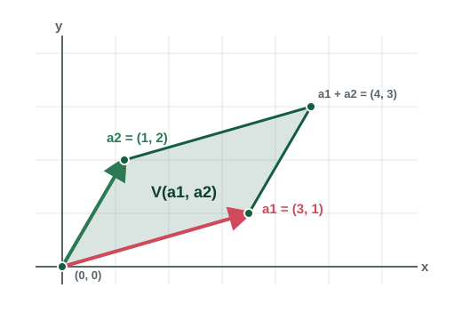
Now we will transform the parallelogram in a way that preserves its area. Consider the line through the origin in the direction of \(a_1\). From the points \(a_2\) and \(a_1 + a_2\), draw perpendicular lines through this line. These lines form a rectangle with the same base and perpendicular height as the original parallelogram. Therefore, the rectangle has the same area as the parallelogram.
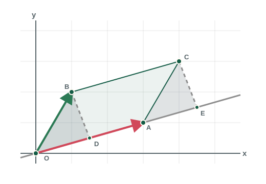
This transformation is called a shear. For any parallelogram, pick one vector and slide it until the other vector becomes perpendicular to it. This is called orthogonalizing the vectors. After orthogonalizing, the vectors span a rectangle whose area is simply the product of its side lengths, making it easy to calculate. Area is shear-invariant, so this is also the area of the original parallelogram.
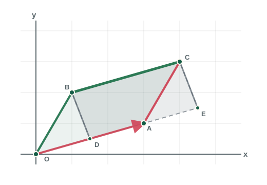
There is a formula for this orthogonalization step. To make a vector \(v\) perpendicular to a vector \(w\), subtract the projection of \(v\) onto \(w\).
For our matrix, let \(a_1 = (3, 1)\) and \(a_2 = (1, 2)\). We keep \(a_1\) fixed and orthogonalize \(a_2\).
We now find the side lengths of the rectangle.
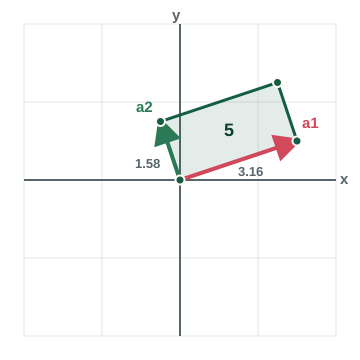
The Gram-Schmidt process generalizes this idea to higher dimensions. By repeatedly subtracting projections, we turn any linearly independent set of \(n\) vectors into an orthogonal basis for the same subspace. In higher dimensions, that gives a systematic way to convert any parallelotope into a hyperrectangle of equal volume.
For more on the Gram-Schmidt process, refer to Professor Gilbert Strang's excellent lecture on the topic, available on MIT OpenCourseWare.
Orientation
Consider the pairs of orthogonal vectors below.
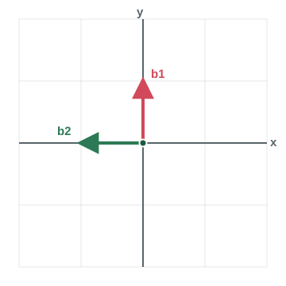
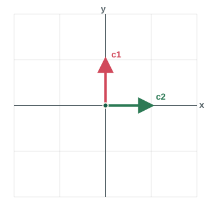
Suppose we want to transform the vectors so that the first is aligned along the positive x-axis and the second is aligned along the positive y-axis. We can do this for \(b_1\) and \(b_2\) by rotating the space by 90 degrees clockwise. But no rotation can put \(c_1\) and \(c_2\) in that position.
We must use a reflection because \(c_1\) and \(c_2\) have an inverted orientation. Reflecting across the mirror line \(y=x\) sends these vectors to their destination. We say that a reflection inverts the orientation of a space, while a rotation preserves orientation.
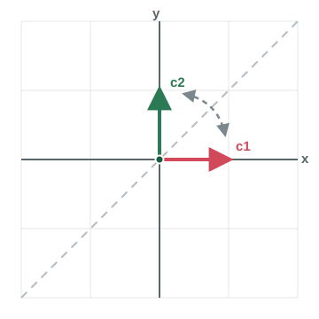
Notice that a rotation can be expressed as a composition of 2 reflections. Reflecting across the line \(y=x\) maps \(b_1\) to the positive x-axis. However, this also maps \(b_2\) to the negative y-axis. We correct this by placing another mirror on the x-axis, which sends \(b_2\) to the positive y-axis. Note that the vector lying along the mirror line is not changed by the reflection.
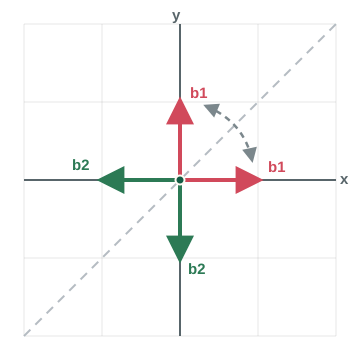
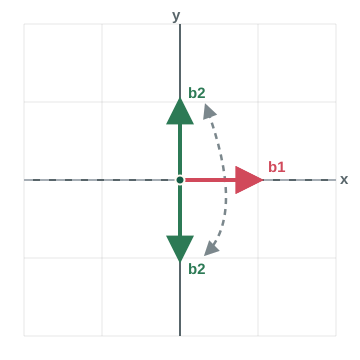
The first reflection inverts the orientation of the space. The second reflection inverts again, restoring the standard orientation. More generally, suppose we transform a set of orthogonal vectors so that they align with the standard basis. If this requires an odd number of reflections, then the vectors have an inverted orientation. If it requires an even number of reflections, then they have the standard orientation.
Let's go back to our original example. After orthogonalizing we have \(a_1 = (3, 1)\) and \(a_2^\perp = (-\frac{1}{2}, \frac{3}{2})\). Obviously, this rectangle can be rotated to align with the positive x-axis and the positive y-axis. This is equivalent to 2 reflections, so the sign of the determinant is positive. Since we have both magnitude and sign, we now have \(det(A) = 5\).
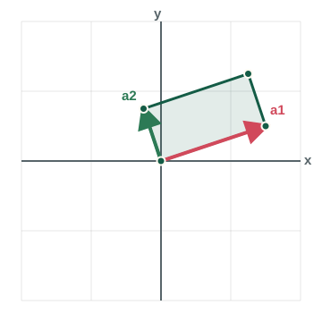
The Householder transformation generalizes the concept of reflection to higher dimensions. The \(n \times n\) Householder matrix \(H\) represents a reflection in n-dimensional space about some hyperplane. Within n-dimensional space, at most \(n\) reflections are needed to map the standard normal basis onto any orthonormal basis. So we have an identity for some \(k \leq n\).
For details on how to compute the Householder reflection, check out Professor Robert van de Geijn's brilliant lectures on YouTube. The lecture discusses how to form a Householder matrix to map a single vector to a target vector. We must find \(k\) Householder matrices to map the column in \(Q\) to the columns of \(I\).
Putting It All Together
For any \(n \times n\) invertible matrix \(A\), we can apply the Gram-Schmidt process to generate some matrix \(P\) with orthogonal column vectors. We find the volume of the shape spanned by the column vectors of \(P\) by taking the product of the lengths of the column vectors.
Next, we normalize \(P\) to get some orthonormal matrix \(Q\). We then decompose \(Q\) into \(k\) Householder matrices.
Given \(k\), we find the sign of the determinant.
Finally, we put volume and orientation together and get the determinant.
The animation in the top panel shows this computation in the 3-dimensional case.